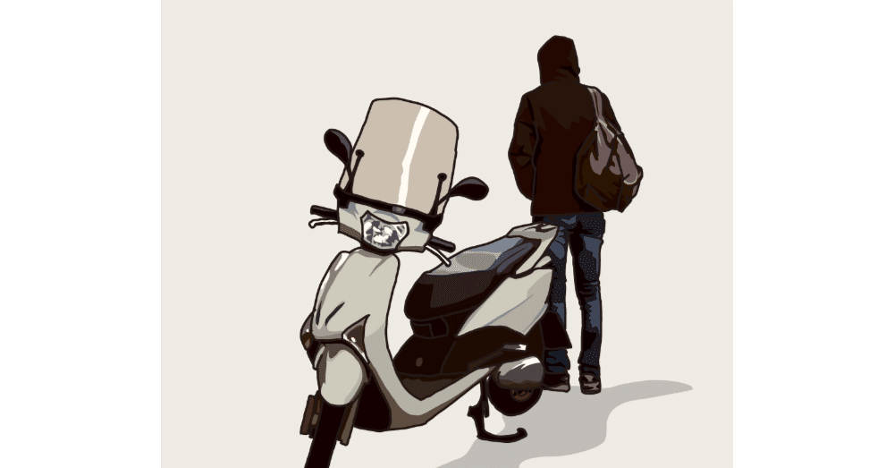
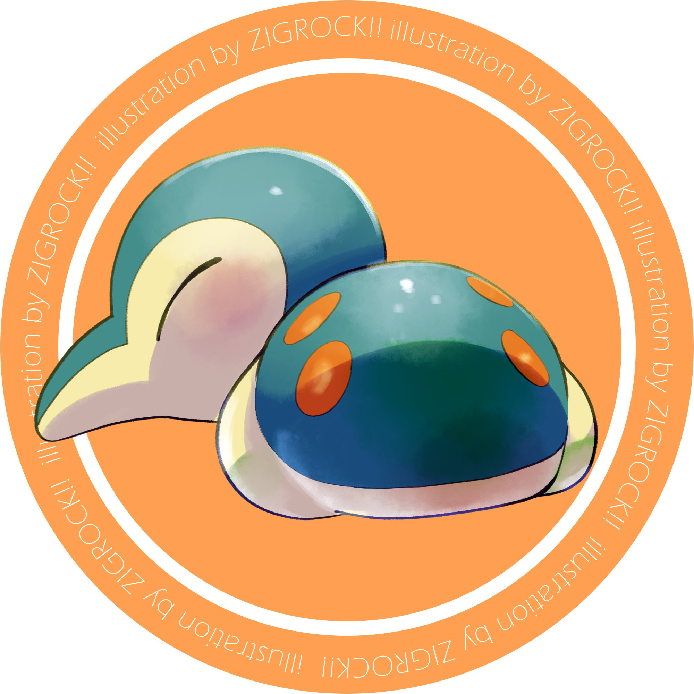
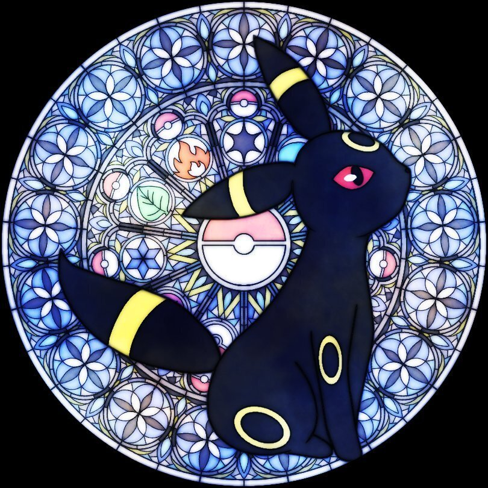
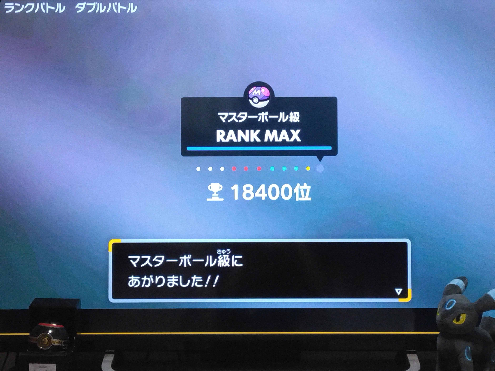
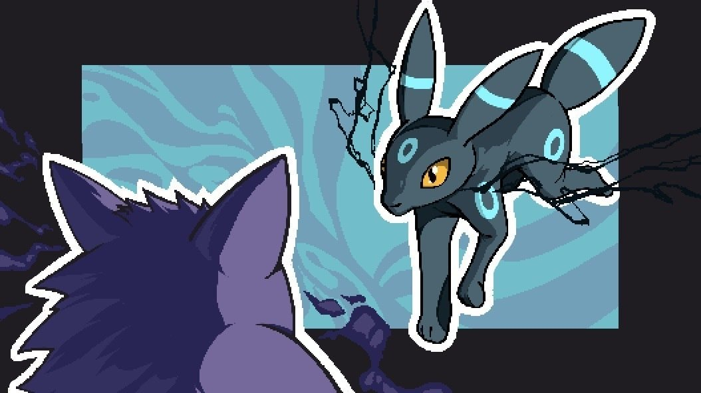

1996年にゲームボーイソフトとして発売され爆発的売上を記録してからというもの、2024年現在も世界的な人気を博している『ポケットモンスター』。
ゲームにアニメ、カードにスマホアプリ、その他関連グッズは日夜売れ続け、2022年の世界年間総売上は約1兆3億円。2024年までの総収益は、「人間の創造的活動から誕生した無形財産コンテンツ」を商いにしている世界のIPコンテンツ会社の中でも1位の22兆円超。名実ともに日本を代表する、モンスターコンテンツだ。
そんな通称『ポケモン』は、まさに僕の人生にとっても必要不可欠な存在。
今日は、これまでの各世代の歴史にも触れながら、そんな25年に渡る僕のポケモン愛を語らせてほしい。ちなみに本記事はかなりの長尺なので、興味のある方だけ読み進めてくれると大変嬉しい。
1999年。この年、『ポケットモンスター金・銀』が発売された。記憶はもう定かではないが、初めてゲームというものを買ってもらい遊んだのが『ポケットモンスター銀』だった。
ユーザーの間では最初に発売された『赤』『緑』が初代、それ以降は第2世代、第3世代といった風に区分けされることがあるが、まさに僕が初めて触った『銀』は第2世代に当たる。
当時は幼稚園生ということもありゲームシステムはあまりわかっていなかったが、ポケモンという不思議な生き物と一緒に冒険に繰り出すワクワクは未だ鮮明に覚えている。
ある田舎町に暮らす10歳の主人公が近所に住むポケモン博士からポケモンを貰い、旅に出る。その旅立ちは、幼心に胸が躍ったものだ。
それと、最初に博士から貰えるポケモンは3匹のうちから1匹選ぶことになるが、これが友達と一緒なのか、はたまた違うのかといった話はポケモン世代なら一度はしたことがあるだろう。ちなみに僕はヒノアラシという、ヤマアラシのような見た目のポケモンをパートナーに選んだ。

前述した通り僕はこの『銀』からプレイしたので、いわゆる初代作品には触れていない。しかし、第2世代の『金』『銀』では初代『赤』『緑』と同じ舞台でも遊べることができるのである。
ポケモンの世界にも現実と同じように複数の国や地域があり、『金』『銀』は近畿地方をモデルに作られたジョウト地方、『赤』『緑』のカントー地方はその名の通り関東地方がモデル。そう、現実の近畿地方と関東地方が陸続きのように、本作でもジョウトからカントーへと冒険を続けることができたのだ。
ジョウトの全部の町を回りきり、「これでお終いかな」と思ったのも束の間、プレーヤーはカントーへと続く道があることを知る。そして、2つの地方を結ぶ道路にいるNPCが言うのである。
「きみは いま！ カントーちほう への だいいっぽを ふみだした！」
こんなに少年心をくすぐる台詞があるだろうか。その言葉を胸に、僕は手塩にかけて育てたポケモンたちとともにカントー地方へと旅を進めたのだった。
2002年。第3世代に当たる『ルビー・サファイア』がゲームボーイアドバンスソフトとして発売。舞台は九州をモデルにしたホウエン地方。
僕は当時9歳。主人公の年齢とほぼ同じになったこともあり、多くのクラスメイトと一緒にポケモンに熱中した。
個人的に驚いたのが、本作での悪役はアニメにもよく出演していたロケット団から交代し、マグマ団とアクア団というソフトによって異なる悪の敵対組織が登場したこと。
大地を広げようとするマグマ団と、海を広げようとするアクア団の悪事を前作同様に主人公が阻止するのだが、悪役でない方の組織が(『ルビー』ならアクア団が、『サファイア』ならマグマ団が)主人公と協力し、ともに野望を食い止めようとする展開も熱かった。
こういう共闘は子どもだった僕にとって、同世代の人間とだけでなく、大人たちと一緒に行動を起こすことの真新しさを教えてくれるようでもあった。
そして、2003年。この年は本編シリーズの新作は発売されなかったものの、ニンテンドーゲームキューブのソフトとして発売された『ポケモンコロシアム』の世界観が、未だに僕の心に深く刻み込まれている。
悪の組織の一員として活動するものの、とある理由でアジトを爆破、組織を裏切った主人公がバイクで颯爽と荒野を駆ける場面から始まる本作は、子どもながらに衝撃を受けた。
その後もこれまでのシリーズらしくない、ダーティでアングラな人物が数多く登場。
もしかしたら規制や制限の多い現在では、同じような作風では発売できていないかもしれない。そう思うと、当時プレイできて本当によかったとすら感じてしまう。
また、本来なら博士からポケモンを貰って冒険に出る流れも、本作では最初からすでに2匹のポケモンを連れているのも新鮮に映った。そして、僕はそのうちの1匹であるブラッキーに一目惚れ。数ある中でも最も好きなポケモンになったのである。

この作品で出会って以降、僕の相棒はずっとブラッキーだ。
月に輝く怪しげな光、夜をイメージした習性、そしてなにより洗練された「かっこいい」「可愛い」「美しい」の3拍子揃った姿に、僕は20年以上虜なのである。
2006年。ニンテンドーDSで発売された第4世代『ダイヤモンド・パール』は、現在でも「シリーズ史上、最も壮大な物語」と評される作品だ。
これまでもこれ以降も、基本的にその地方に存在する伝説のポケモンを追うストーリーが主軸になっているが、本作の場合それが「神」のポケモンなのである。時間と空間を操る2匹の伝説、そしてその先に眠る宇宙の創生主。
こうした広大なストーリーと、北海道をモデルにしたシンオウ地方の美しい雪国の風景を噛みしめながら冒険をできたことは、今後さらに本シリーズに熱中することを予感させたのだった。
2010年。ニンテンドーDSで第5世代の『ブラック・ホワイト』が発売。
これまでモデルとなった地方はすべて日本国内だったが、ここにきて初めてアメリカをモデルにしたイッシュ地方が舞台に。そのためか、本作ではある意味これまでのシリーズらしくない、「宗教」「人種」「自由とは何か？」といった要素がふんだんに盛り込まれた。
特に「ポケモンにとっての自由とは何なのか？」という主題が、個人的には突き刺さった記憶がある。
ポケモンとは一般的にモンスターボールというボールの中に入れて冒険するのだが、本来自然の中で暮らす彼ら彼女らがその中に閉じ込められ生きることに対する善悪を、本作ではプレーヤーに問い続けている。
こうした問いはシリーズの根幹にも関わるものであり、よりポケモンの立場に立って考えさせられるような哲学的要素でもあった。
2013年。ニンテンドー3DSソフトとして発売された第6世代、『X・Y』ではグラフィックがドット絵から立体的な3DCGモデルに変更され、一気にその世界がリアルなものに。
そのグラフィックで表現される、フランスをモデルにした華やかなカロス地方も、プレーヤーに鮮やかな彩りを見せてくれた。
また、本作から追加された主人公の着せ替え機能は、現在の最新世代にまで続く定番化した機能になっている。
それに、本作は個人的にかなりのめり込んだ作品でもある。ポケモンには捕獲や育成のほかに他ユーザーとのオンライン対戦要素があるが、本格的にそれで遊んだ作品だった。
色々な種類を育成し対戦で試してみる。苦手な相性やチームを研究し、その対策をしながら自分だけのチームを組んで再度対戦をする……といった経験は、プレーヤーとして今でも貴重な財産になっているのだ。
2016年。同じくニンテンドー3DSで発売の『サン・ムーン』。
第7世代の本作では、前作までの常識は通用しない。それもそのはず、これまでのシリーズで共通していた、ジムリーダーと呼ばれる各町に点在する凄腕トレーナーに勝利し、その先に待つ四天王やチャンピオンにも勝ち、自らが新王者になる、といった流れを一新した作品なのだから。
ハワイ諸島をモデルにしたアローラ地方の各島で認められ、自らがその地方の初代チャンピオンとして名を刻む物語は、新しい冒険の形を提示してくれたようだった。さらに、作品全体に漂う南国のような雰囲気も、ハワイに観光にやってきたみたいで終始楽しかった記憶がある。
2019年。第8世代としてNintendo Switch初のシリーズ作品になった『ソード・シールド』。舞台はイギリスモデルのガラル地方。
前世代とは打って変わって従来通りのストーリー展開だが、なにより熱かったのは世界最強王者のダンデに勝つための物語だったこと。
無敗の絶対的チャンピオンが君臨するこの地方で、そしてポケモン対戦が最も盛んなこの場所で、バトル修行をするかのごとく冒険ができたのはやはり王道で燃えたものだ。
それにイギリスのアーサー王伝説をモデルにしたガラル地方の英雄伝説にも、いつかイギリスに行ってみたいと思っている僕の冒険心をさらにくすぐった。ソフトの開発者は、こうした現実の伝承と絡めて物語に興味を引かせるのがとても上手いと思う。
2022年。本記事執筆現在、最も新しい世代(第9世代)であるNintendo Switchソフト『スカーレット・バイオレット』。シリーズ初のオープンワールドでの冒険が楽しめる。
パルデア地方と呼ばれるイベリア半島をモデルにした地方で、主人公は学校の生徒として学園生活を送る。そしてその中で「宝探し」という名のもと、地方全体を巡る旅に出ることに。
本作で特記すべきことは、クラスメイトとの絆を重点的に描いていることだろうか。
これまでは必ずライバルという存在がいて、ことあるごとに対戦をして競い合う様子があった。もちろん本作でもそうなのだが、それだけでなく仲間を思いやる気持ちが随所に散りばめられており、ひとりではなく一緒に冒険をしている仲間のような描き方が特に印象的なのである。それはまるで、学生時代にしか得られない、純粋な友情の大切さを教えてくれるようでもあった。
初めて冒険を出てから各地方を巡っていたら、気づけば25年の時が流れていた。
とうに成人し社会人になった今でも、ポケモンは僕の心のイマジナリーフレンドとして、ずっとそばにいてくれている。
そして、『ルビー・サファイア』より後は長らくひとりでシリーズをプレイしていたけれど、『ソード・シールド』からキャンプ仲間である相棒もポケモンにハマり始めてくれたので、会う際は必ず対戦をする間柄になった。
もちろん、戦えば自ずと勝ち負けが決してしまうが、勝っても負けても対戦後のポケモン談義には必ず花が咲く。
「あの場面はあの技にすればよかった」「あの盤面で勝敗が決まったな」といった具合に、お酒を飲みながら話す時間は何より楽しいし学びにもなる。ひとりでは気づけない多くのものを、僕は相棒から受け取っているわけだ。
それに今、僕らの間で盛り上がっているのがオンラインでのポケモン対戦。
大人のプレーヤーも多く参加しているオンライン対戦にはランクバトルというものがあり、11階級あるランク(RANK1～11)のうち、相棒と僕は最高ランクまで勝ち進むことができた。
しかし、あくまで僕らが目指すのはRANK11内でも最上位。夢を語り合いながら各々好きなポケモンでチームを組み切磋琢磨するライバルは、やはりかけがえのない存在なのだ。

そして、絵描きでもある相棒は、今年の誕生日に僕らの対戦の様子をイラストにしプレゼントしてくれた。こんなに嬉しいことがあっていいのだろうか……！

今では額縁に入れ自宅に飾っている。どんなに落ち込んでしょげた日があっても、これを見ればやる気がみなぎってくるのだ。 一生の宝物である。
ついついゲームの話が長くなってしまったが、ポケモンを語るうえでどうしても外せないものがあるので、最後にそれを話させてほしい。
そう、1997年から放送されていたポケモンアニメ、サトシの旅編だ。
東京の町田で少年期を過ごし、後にゲームクリエイターになる田尻智が、虫捕りや自然への冒険経験を色濃く反映させ、仲間たちとともに6年もの期間を経て開発したゲームソフト『ポケットモンスター』。
そんな彼の名前からとって名付けられた主人公、サトシは1997年の放送以来、ピカチュウを相棒に26年もの間旅をしてきた。
「ポケモンマスターになる！」と言って家を出た少年は、同郷で最大のライバルのシゲルをはじめ、様々なトレーナーとしのぎを削っていく。
やがて各地方を回るうちに着実に実力をつけ、そしてついに絶対的王者・ダンデに勝利。世界最強のポケモントレーナーになる。
視聴者側からすれば「世界最強」＝「ポケモンマスター」だと思った方もいただろう。なにせ、僕もそのうちのひとりだ。
しかし、最強という肩書きはできたものの、その後も冒険を続けていくうちに、サトシは｢世界中のポケモンと仲良くなることがポケモンマスター｣だと考えるようになる。
この結論に至ったサトシが再び旅に出るところで、その旅を描くアニメはピリオドを打った。
しかし、彼の冒険自体に終わりはない。僕らの知らないところで、サトシとピカチュウは今もどこかで旅を続けているのだろう。
僕はこれまで、その冒険に何度ワクワクさせられ、そして勇気づけられたことか。まさに子どもの頃から大人になるまで、その勇姿を見続けながら成長してきた。
どんな強敵や高い壁にも諦めず、凹むことはあっても引きずることなく前を向く。その力強さに、僕は生き方を学んだ。もしかしたら大げさに思えるかもしれないが、これは本当だ。サトシとピカチュウは僕にとって、人生の師でもあるのだ。
現在のアニメはサトシから新しい主人公へと交代し、かつて僕がサトシたちに目を輝かせたように、新世代の面々が今の子どもたちに夢と希望を与えている。
そう思うと、僕もずいぶん遠くまできてしまったような感覚になる。それでも、社会で打ちのめされたこの心を救ってくれるのはポケモンなのだ。それは、これまでもこれからも変わることはない。
これまでの人生において、ポケモンに出会えたことは数少ない幸運のひとつだ。その存在に幾度となく救われてきたからこそ、僕は僕でいることができている。そしてこの先も、「この星の不思議な不思議な生き物」は僕らの心に寄り添い、ともに生き続けてくれることだろう。
https://www.youtube.com/watch?v=hMKf5mE3sdo